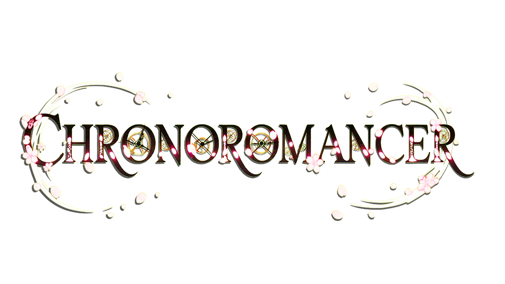

Optional add-on · 可选扩展包
Dungeon Animation Pack
Adds 142 looping animations to selected dungeon scenarios, special encounters, and miniboss artwork. Chronoromancer is required.
为部分地下城场景、特殊遭遇和小头目插图加入 142 个循环动画。需要安装 Chronoromancer 本体。
Direct RPA download—no ZIP and no extraction. Keep the filename exactly dungeon_animation_pack.rpa.
直接下载 RPA 文件，无需 ZIP 解压。请保留文件名 dungeon_animation_pack.rpa 不变。
Download or update Chronoromancer V1.1 / 下载或更新 Chronoromancer V1.1
Installation and use
English Instructions
This optional add-on requires Chronoromancer V1.1 or newer. Compatible Main and Steam editions include the animation-pack and Import Mod support needed for automatic enabling after one restart. The Promotion edition is not supported.
Install with Import Mod
- Download
dungeon_animation_pack.rpaand remember where it was saved. - Open Chronoromancer and select Mods from the main menu.
- Select Import Mod and choose the downloaded RPA.
- After the import finishes, restart the game once. The imported pack is enabled automatically.
- Open Mods to choose Click-to-play or Automatic playback.
Playback modes
- Click-to-play: A small play button appears on matching artwork. Clicking it opens the looping animation with the other screen content cleared. Click anywhere to restore the previous screen without advancing the scene.
- Automatic: The animation replaces the matching still image behind narration and the interface.
Both modes also work with matching artwork in EXTRAS. The pack animates selected images; it does not unlock gallery entries.
Optional manual installation
Close the game and place dungeon_animation_pack.rpa inside the game’s game/mods/ folder. Open Mods, enable Dungeon Animation Pack, and restart if it was newly enabled.
Updating: Keep only one installation of the pack. If you installed it through Import Mod, use Import Mod again when updating.
安装与使用
简体中文说明
这是可选扩展包，需要使用 Chronoromancer V1.1 或更高版本。兼容的主版本（Main）和 Steam 版本包含动画包及“导入模组”支持，导入后重启一次即可自动启用。Promotion 推广版不受支持。
使用“导入模组”安装
- 下载
dungeon_animation_pack.rpa，并记住文件保存的位置。 - 启动 Chronoromancer，在主菜单中选择模组（Mods）。
- 选择导入模组（Import Mod），然后选中下载的 RPA 文件。
- 导入完成后重启游戏一次。导入的动画包会自动启用。
- 打开模组（Mods），选择点击播放（Click-to-play）或自动播放（Automatic）模式。
播放模式
- 点击播放：匹配的插图上会出现一个小播放按钮。点击后会打开循环动画，并暂时清除屏幕上的其他内容。点击任意位置即可返回之前的画面，且不会推进剧情。
- 自动播放：动画会在旁白文字和界面后方替换对应的静态插图。
两种模式也适用于 EXTRAS 中相匹配的插图。此动画包只会让指定插图动起来，不会解锁尚未获得的画廊条目。
可选的手动安装方式
关闭游戏，将 dungeon_animation_pack.rpa 放入游戏的 game/mods/ 文件夹。打开模组（Mods），启用 Dungeon Animation Pack；如果是刚刚启用，请重启游戏。
更新说明：请只保留一份动画包。如果之前通过“导入模组”安装，更新时请再次使用“导入模组”。